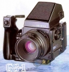

Bronica GS-1 是一款6 x 7cm片幅的镜间快门单反相机，可换镜头、后背、取景器和对焦屏。
不知道为什么国人不认
做工精细，轻便，该有的功能都有。手柄结构极为简单但使用起来很爽。镜头都很不错。
裂像对焦屏难找，AE顶太贵
本人用此机是92年 当时用120的人不多,120机很不好找,才买了此机,用后 发现很好.镜头很好 机器也很好操作,可惜用的人不多,不知到他的妙处
比较轻便(与120 6X7同比)镜头成像不错, 可手持拍摄
裂像调焦屏 不好找 北京摄影器材城有卖的,可惜我没买到(4个都卖掉 了)看来用GS-1的人都在找 (标配是磨沙调焦屏)
本来在6*7画幅的选择上就不大，价格相近的有Pentax67，Mamiya67和Bronica GS-1。P的不可以更换后背，Mamiya的过于沉重，而且调焦方式等操作都不适合野外操作，剩下的就只有GS-1了。配备过片手柄，旋转取景器的GS-1在操作行上同MF的135相机没有很大区别，可以提供平均、单点测光方式的取景器是此机型的亮点之一。可以单独设定ISO和曝光补偿参数的后背，使用非常方便。机身提供的手动、光圈优先曝光方式比较实用。 配备的PG110MMmacro镜头，解像力，反差和畸变控制都不错，没有使用过65MM和50MM的广角，据说不错。 同比哈苏的镜头，价格上的差距不足以体现性能的差距。
在提供6*7画幅的120相机中（单反），最优的操作性。 PG镜头质量高。 重量较轻。
除了二手市场，在国内难以找到镜头和配件。 镜头可以选择的范围较小。 几乎不能保值，在二手市场上较小的流通性。